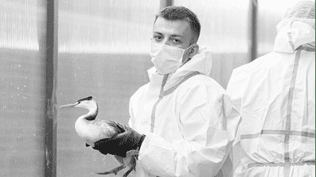
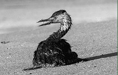
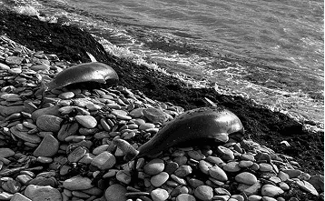
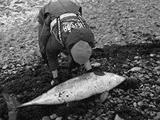
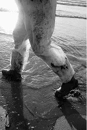
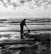
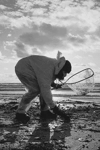
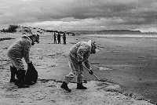
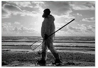

Нефтяные разливы — одна из самых разрушительных экологических катастроф: они бьют и по экосистемам, и по людям. 15 декабря 2024 года у Анапы начался масштабный разлив мазута, последствия которого ощутили и местные жители, и туристы.
«Вода в тот день была мутной, с химическим запахом. Мы увидели первую чайку — она сидела на песке и не пыталась взлететь. Крылья были облеплены густой чёрной плёнкой».
В этом лонгриде разбираем, как один разлив меняет всё — от дыхания планктона до жизни людей.
Хроника катастрофы: море накрыло мазутом
15–18 декабря 2024, Керченский пролив и побережье Анапы
Разлив произошёл 15 декабря 2024 года у Черноморского побережья недалеко от Анапы. Причина — шторм и повреждение корпуса танкера «Волгонефть-239», который шёл через Керченский пролив. Судно перевозило мазут — тяжёлый нефтепродукт, который плохо растворяется в воде и почти не испаряется, а оседает на берегах и на морском дне.
По данным BBC Verify и экологов, в воду попало до 5000 тонн нефтепродуктов, которые покрыли около 90 км² акватории.
Первые спутниковые снимки с видимой нефтяной плёнкой появились через два дня после разлива. На них — чёткая полоса загрязнения от центра до побережья Анапы. Уже 16 декабря на берегу появились первые следы мазута: плёнка на воде, мёртвые чайки и мутные волны. К 18 декабря загрязнение стало видно невооружённым глазом, и местные жители с волонтёрами вышли чистить пляжи.
Море молчит, животные — нет
Последствия для фауны
Для местных животных разлив стал катастрофой. Уже в первые часы в соцсетях появились фотографии: птицы в жирной плёнке, которые медленно выбираются на берег, дельфины, которые пытаются всплыть, но вязнут в нефти. Эти снимки задокументировали тяжёлые повреждения фауны и высокую смертность среди животных.
Птицы
Птицы стали самыми первыми жертвами. По оценке волонтёрских групп, которые ликвидировали последствия, в первые дни после разлива собрали около 8000 пострадавших птиц. В реабилитационных центрах удалось стабилизировать лишь 121 из них. Большинство погибли ещё до прибытия специалистов.
Причина высокой смертности — не только токсичный мазут, но и то, что в России нет системы экстренной ветеринарной помощи для диких животных.




Дельфины
Дельфины пострадали не менее тяжело, хотя в первые дни их гибель была не так заметна, как гибель птиц. По данным экологов, нашли восемь мёртвых особей, трёх спасли, а больше десятка выбросились на берег в течение недели. Причина — острое отравление мазутом через кожу и дыхательные пути.
Дельфины, в отличие от птиц, не могут выйти на сушу, чтобы избавиться от плёнки. Долгое пребывание в грязной воде нарушает их физиологию и резко повышает риск гибели.



Моллюски, планктон и ракообразные
Менее заметной, но не менее серьёзной потерей стала гибель моллюсков, планктона и ракообразных. Экологи предполагают, что значительная часть этих организмов погибла в первые часы после разлива.
Массовая гибель запускает цепную реакцию: страдают популяции мелкой рыбы, за ними — крупные хищники и птицы. Когда рушится нижний уровень пищевой цепи, под угрозой оказывается устойчивость всей экосистемы и биоразнообразие региона на годы вперёд.



Люди против нефти
Кто вынес мазут на себе
Около 600 волонтёров чистили побережье в первые три недели после аварии. Условия часто нарушали санитарные нормы: защитные костюмы покупали на частные пожертвования, маски были многоразовые, средств для обеззараживания не было. По данным эколога Владимира Лифантьева, не меньше 150 участников жаловались на здоровье: головные боли, ожоги, проблемы с кожей.
При этом государство формально не признаёт волонтёров участниками реагирования на ЧС. Они остаются вне правового поля и без медицинской поддержки.


Местные жители и волонтёры спасали животных как могли, но работать было тяжело: инфраструктура разрушена, оборудования не хватало. Игорь Петров, волонтёр и координатор волонтёрского центра «Сила Урала», рассказывает, как они с этим справлялись:
«Мы использовали даже старые пластиковые бутылки, чтобы собрать мазут с перьев птиц. Некоторые птицы пытались лететь, но нефть становилась такой тяжёлой, что они падали. Мы обрабатывали их маслами и водными растворами, чтобы снять мазут, но на это уходили часы, а на счету была каждая минута».
Стало очевидно, что государственной системы спасения дикой природы при экологических катастрофах нет. В России до сих пор не создана централизованная служба экстренной реабилитации животных. Волонтёры действуют вслепую, без инструкций, страховки и доступа к оборудованию. Эта структурная неготовность и делает такие кризисы особенно разрушительными.



Кроме физических рисков, добровольцы столкнулись и с психологическими: работа с мёртвыми и умирающими животными, отсутствие координации, равнодушие местных властей. Истории участников заполнили соцсети: в них усталость, гнев, бессилие и ощущение полной отчуждённости от «официальной картины событий».
Сколько море будет восстанавливаться
От полутора до десяти лет — смотря кого спросить
Эксперты расходятся во мнениях о сроках.
При активной очистке экосистема может стабилизироваться за 1,5–2 года.
После разлива в Керченском проливе в 2007 году в море попало около 2000 тонн мазута, и флора с фауной восстанавливались около двух лет. Тогда пострадало около 5000 животных. Разлив у Анапы затронул в 1,5 раза бо́льшую территорию и, по некоторым оценкам, больше 8000 птиц. Масштабы растут, а протоколы реагирования за ними не успевают.
Керченский пролив, 2007
- ≈2000 тмазута
- ≈5000пострадавших животных
- ≈2 годана восстановление
Анапа, 2024
- до 5000 тнефтепродуктов
- 8000+птиц
- ×1,5площадь загрязнения
Срок может быть заметно больше — от 5 до 10 лет, учитывая, насколько ухудшилось качество среды.
Отдельная тревога — вторичное загрязнение.
Мазут, осевший на дне, может начать всплывать летом 2025 года, когда вода прогреется.
В отличие от лёгких нефтепродуктов, мазут почти не разлагается: он оседает в донных отложениях и при определённых условиях поднимается на поверхность, особенно на мелководье и там, где слабое течение. Это делает его экологической миной замедленного действия: побережье может загрязниться снова спустя месяцы после того, как его визуально очистили. Поэтому нужны не только срочные меры, но и постоянный мониторинг и долгая стратегия восстановления.
Чёрное море стало ещё чернее не только от мазута, но и от боли тысяч погибших существ.
Разлив у берегов Анапы в декабре 2024 года оказался не просто экологическим инцидентом, а полномасштабной катастрофой. Он обнажил уязвимость и природы, и социальной инфраструктуры. Мазут разрушил морскую экосистему, а волонтёры без ресурсов и без поддержки государства вынесли на себе основную тяжесть спасения — и физически, и эмоционально.
Происшествие показало: Россия не готова быстро и масштабно реагировать на экологические ЧС, особенно когда нужно спасать дикую природу.
Восстановление Чёрного моря займёт годы. Но главное: без структурных изменений в экологической безопасности такие катастрофы будут повторяться. Нужна не только ликвидация последствий, но и системная политика предотвращения и защиты.